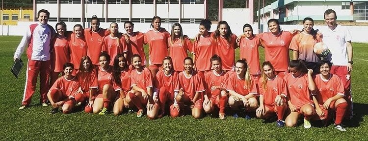
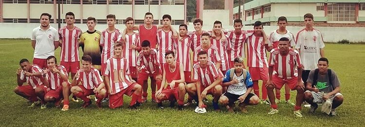
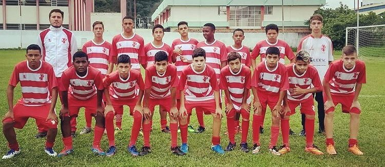
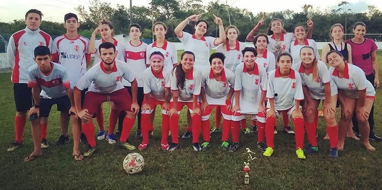

Escolinha
O projeto Futebol e Cidadania da UDESC é realizado há 15 anos com o apoio do Bangu do Rio Tavares, time de futebol local, na Associação Recreativa Esportiva e Cultural Bangu. O projeto que tem a coordenação do professor da Universidade de educação física Alfredo Balduíno, e realizados pelos alunos. A ação atende crianças e adolescentes dos 5 aos 18 anos três vezes por semana, terças e quintas, no período da tarde e sábados pela manhã. A ação busca valorizar as crianças e os jovens do local através do esporte e da promoção da cidadania. Ensinar a disciplina dentro e fora do campo, reforçar qualidades individuais e coletivas, promover o respeito às regras e ao próximo.




Apoiadores: